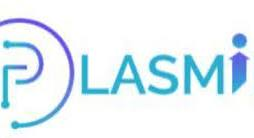

üåü Food Donation Portal
Internship Project | Coimbatore Institute of Technology x Boredom Technologies LLP
üéØ Problem Statement & Objective
Millions of people struggle with hunger daily, while surplus food is often wasted. This platform bridges that gap by connecting food donors with NGOs and volunteers, enabling timely and safe food redistribution.
üìù Project Overview
The Food Donation Portal is a socially impactful web application developed during my internship to connect food donors with NGOs and volunteers in real-time. It enables users to submit donation requests, upload images, and track them on an interactive map.
üíª Technology Stack
Frontend:
- Next.js (React Framework)
- JavaScript, HTML5, CSS3
- React Hooks:
useState,useEffect
Map Integration:
- Leaflet.js with React-Leaflet
- Dynamic Markers from Firebase location data
Backend & Storage:
- Firebase Firestore (NoSQL DB)
- Firebase Storage for image uploads
- Firebase Hosting for deployment
AI Chatbot:
- Custom NLP bot to assist users and answer FAQs
Deployment & Version Control:
- Vercel (CI/CD and Hosting)
- Git & GitHub (Version Control)
üìà Key Features
- Food donation form with real-time validation
- Live updates of donation submissions
- Interactive map to visualize and locate donations
- Mobile responsive and animated interface
- AI chatbot for basic guidance and support
üìê System Architecture
ü߆ Challenges & Learnings
- Handling real-time data sync using Firebase Firestore
- Integrating React-Leaflet with dynamically updating markers
- Responsive UI across mobile and desktop using custom CSS
- Deploying with CI/CD using Vercel
üí° Code Highlight: Dynamic Map Marker
{donations.map(donation => (
{donation.foodName} - {donation.quantity} servings
))}
üõ†Ô∏è Skills & Tools Used
React.js Next.js Firebase Leaflet.js JavaScript HTML5 CSS3 AI Chatbot Vercel GitHubüó£Ô∏è Mentor's Feedback
“Krishna's project was a standout. The use of real-time maps and AI chat support shows a strong grasp of modern web technologies.”
– Internship Supervisor, Boredom Technologies LLP
üîÆ Future Enhancements
- Add geofencing to notify nearby NGOs automatically
- Enable SMS/WhatsApp notifications using Twilio
- Improve chatbot with GPT or Dialogflow
- Admin panel for verification and tracking
üèÜ Internship Details
- Duration: 4 June 2025 – 17 June 2025
- Title: MVP to AI-Powered Apps: For the Modern Web Builders
- Grade Awarded: ★ Outstanding
- Certificate: Attached in portfolio

Artificial Intelligence Project
This is a sample detailed section for the Frontend project.